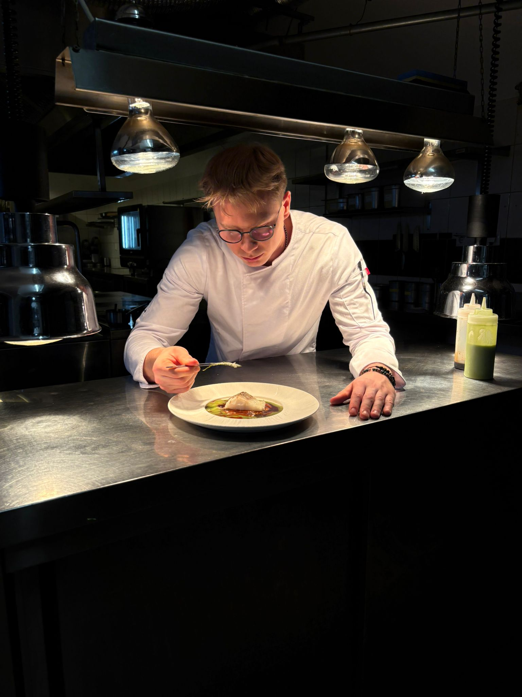
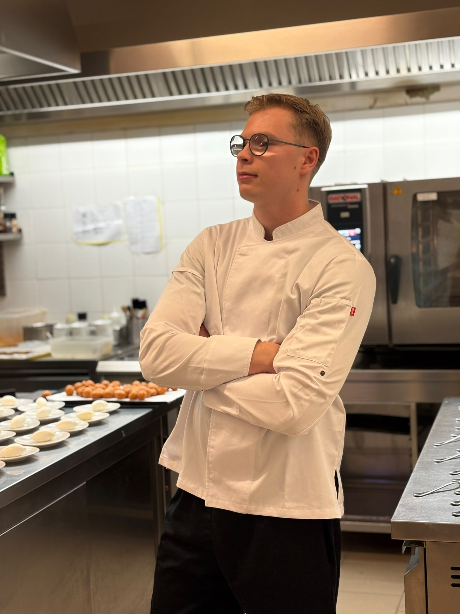
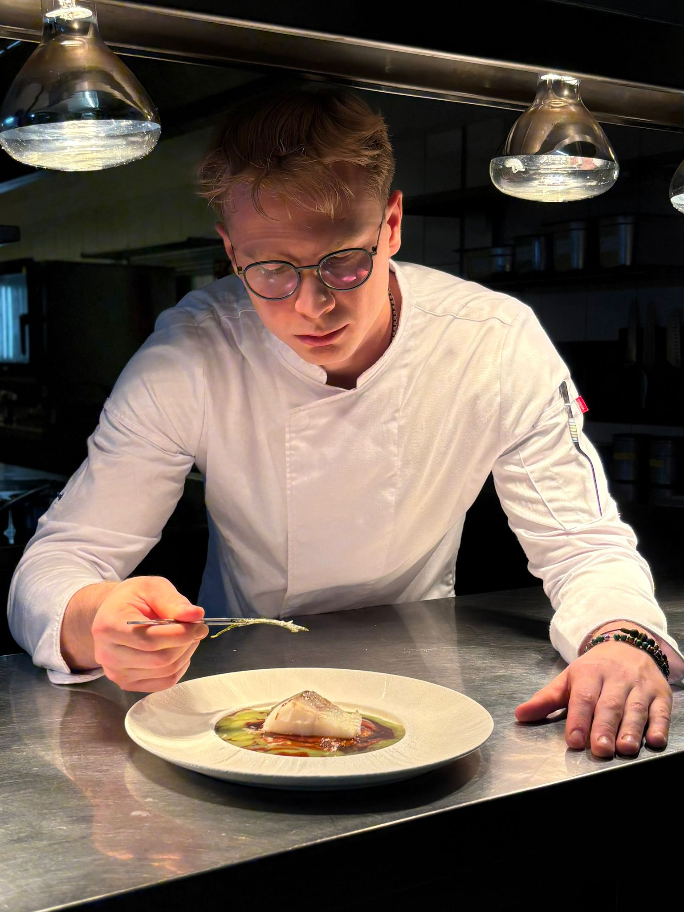
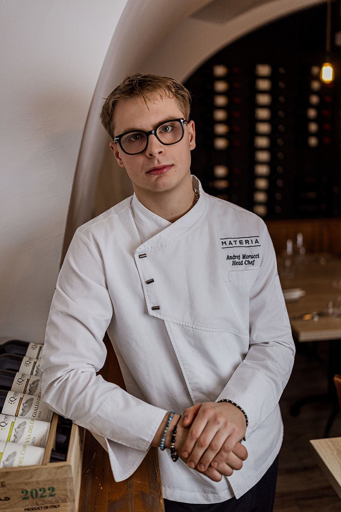

La storia di Andrej Morucci inizia tra le colline di Città della Pieve e i profumi delle grandi cucine di famiglia.
Cresce respirando la ristorazione vera tra le mura di Le Tartare Cucina&Vini, insegna di riferimento e autentico emblema della cucina di mare in Toscana.
Da suo padre, Maurizio Morucci, un imprenditore, cultore del vino e storico collaboratore dell’eccellenza del tartufo Urbani, eredita la visione strategica e la passione viscerale per questo mestiere.
Da sua madre, Svetlana, straordinaria Chef, apprende il rispetto per la tradizione pura e i primi, fondamentali segreti dell'arte culinaria.
È in questo scenario che la cucina cessa di essere un semplice lavoro e si trasforma in una vocazione assoluta.
Il suo viaggio professionale prende forma all'Istituto Alberghiero Pellegrino Artusi di Chianciano Terme.
Il percorso viene subito messo alla prova da una dura gavetta sul campo: dalle prime esperienze tra trattorie, ristoranti e hotel a cavallo tra Umbria e Toscana, fino agli alberghi della Riviera Romagnola, la sua determinazione brucia ogni tappa.
A soli sedici anni ricopre già il ruolo di capopartita, guidato da una crescita esponenziale e da una fame insaziabile di conoscenza e perfezionamento tecnico.


Ottenuta la qualifica da Chef a diciannove anni, Morucci individua nell'Europa il suo terreno di confronto.
Francia, Germania, Spagna e Ungheria ne forgiano il carattere e la visione, intervallate da stagioni intense in terre di grande materia prima come la Sicilia e da consulenze esclusive in Sardegna.
Affina il proprio rigore nelle cucine stellate d'Europa, lavorando al fianco di maestri come Carmelo Greco e Benedetto Russo.
L'estero lo fortifica, richiedendo il massimo ma permettendogli di esprimere pienamente tutto il suo potenziale.
Classe 2003, Andrej Morucci si afferma rapidamente come uno dei più giovani ed energici Head Chef del panorama internazionale.
Allo scoccare del suo ventiduesimo compleanno assume la guida di Materia - Trattoria Moderna, nel cuore di Budapest.
Sotto la sua direzione, il ristorante compie un'ascesa straordinaria: conquista il primo posto assoluto sulle piattaforme di riferimento, riceve il prestigioso premio dei 3 Templi dall’Accademia Italiana della Cucina e viene inserito nella guida d'eccellenza del fine dining italiano nel mondo.
Una cucina d'autore che oggi dialoga quotidianamente anche attraverso i canali digitali, dove lo Chef racconta il dietro le quinte del suo lavoro a una community globale di milioni di spettatori.
